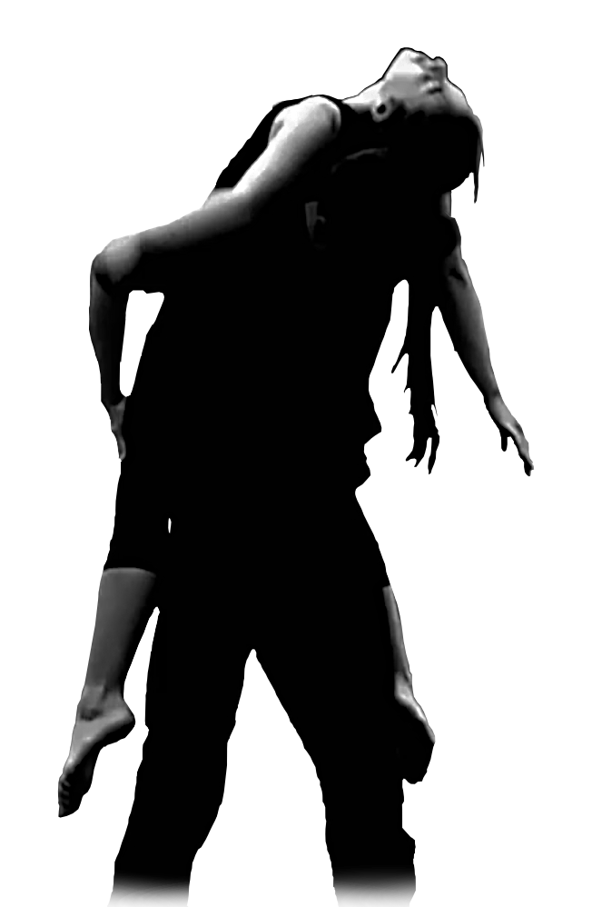
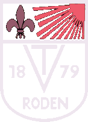

Ein Generationen übergreifendes Ensemble von Akrobaten in und um Saarlouis. Die Technik der Sportakrobatik vereint mit der kreativen Freiheit des zeitgenössischen Zirkus.
Our first show will accompany two girls trying to cross the ocean of their childhood, getting carried away by the nymphs. A story told through acrobatic movement. Minimal stage, costume and light design.
With music by Clann.
